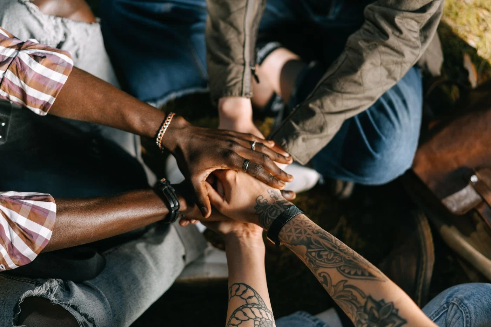

Помощь в ремонте и отделке актового зала детского дома в городе Покрове.
ОБЪЕДИНЯЕМ ЛЮДЕЙ. СОЗДАЁМ ВОЗМОЖНОСТИ.
Сила
в людях.
Большие дела начинаются с простого —
с людей, которым не всё равно.
Поддерживаем культурные и социальные инициативы.
Помогаем идеям становиться реальностью.
Иваново · Открыты людям и идеям

Каждый человек —
начало больших перемен.А вместе мы можем больше
начало больших перемен.А вместе мы можем больше
Разные люди. Общие ценности.
Люди·Идеи·Дела
Мы рядом, чтобы хорошая идея
стала нашим общим делом.
↓стала нашим общим делом.
ТОЧКИ ПРИЛОЖЕНИЯ СИЛ
Разные направления.
Одни ценности.
Поддерживаем то, что объединяет людей
и делает жизнь вокруг лучше.
ЗНАКОМИМСЯ БЛИЖЕ
Сила в единстве.
Всё начинается
с человека.
С его идеи, таланта и желания
что-то изменить.
«Кунаки» — центр поддержки культурных и социальных инициатив. Мы создаём пространство, где встречаются люди с общими ценностями, рождаются идеи и складываются команды.
Верим в доверие, взаимную поддержку и возможности, которые появляются, когда мы действуем вместе. Потому что за каждым большим делом всегда стоят люди.
Собственная сила
есть в каждом.
Общая —
между нами.
ДовериеПоддержкаСозидание
ОТ ИДЕИ К ДЕЛУ
То, что нас объединяет
Творческий проект, связанный с выступлениями перед детьми и взрослыми.
Творческие, музыкальные и кинематографические проекты. Открыты вашим предложениям.
Хотите узнать о текущих задачах или предложить помощь? Свяжитесь с командой — обсудим, что можно сделать вместе.
НАША ГЛАВНАЯ ЦЕННОСТЬ
Сильные стороны —
у каждого свои.
Кто-то умеет придумывать. Кто-то — организовывать.
Кто-то просто готов быть рядом.
В «Кунаках» важен каждый.
Алексей ОвсянниковДиректор АНО «Кунаки»
Здесь есть
место вам.Атмосфера сообщества · иллюстративное фото
место вам.Атмосфера сообщества · иллюстративное фото
СДЕЛАЕМ ЧТО-ТО ХОРОШЕЕ ВМЕСТЕ
Ваша идея.
Наша общая сила.
Необязательно знать, с чего начать.
Достаточно желания сделать первый шаг.
Хотите поддержать наши инициативы?
МЫ НА СВЯЗИ
Начнём с разговора?
О людях, идеях и том,
что мы можем сделать вместе.
Открыто и прозрачноОфициальные сведения об организации